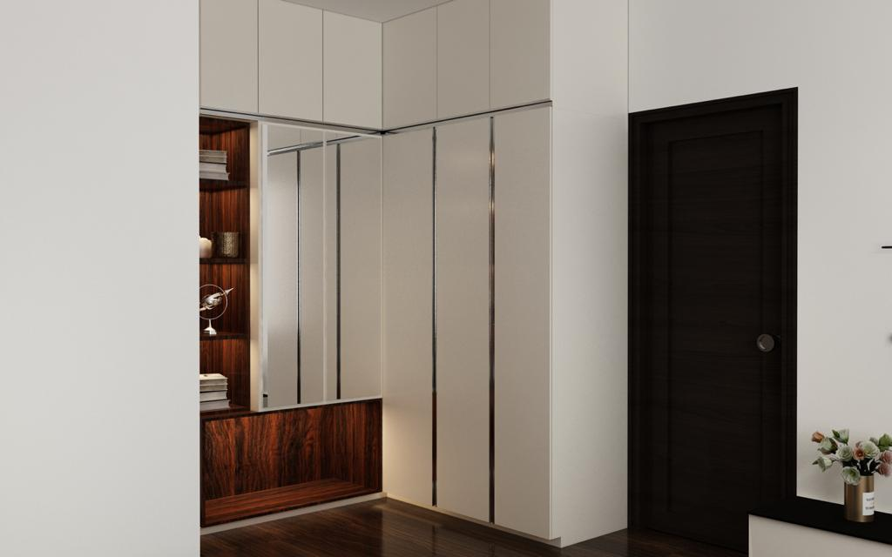
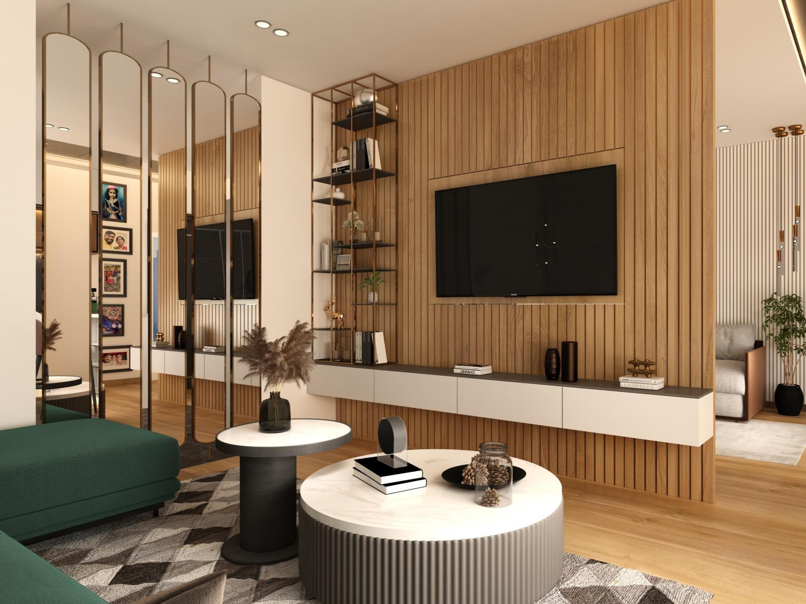

Where I've built
things that ship
Wo ich Dinge gebaut habe,
die ausgeliefert wurden
Building an interior project management platform. Defining workflows for clients, designers, contractors, and suppliers.
Aufbau einer Plattform für Innenarchitektur-Projektmanagement. Workflows für Kunden, Designer, Auftragnehmer und Lieferanten.
- Defining workflows for clients, designers, contractors, and suppliers
- Workflows für Kunden, Designer, Auftragnehmer und Lieferanten definieren
- Leading MVP development, brand positioning, and user experience
- Leitung von MVP-Entwicklung, Markenpositionierung und Nutzererlebnis
- Testing the concept through user feedback, pilot conversations, and market validation
- Konzept durch Nutzerfeedback, Pilotgespräche und Marktvalidierung testen
Focused on human-centred spatial design and future habitats, where interior architecture meets extreme environments and emerging living systems.
Fokus auf menschenzentriertes Raumdesign und Zukunftshabitate, wo Innenarchitektur auf Extremumgebungen und neue Wohnsysteme trifft.
- Designing immersive spatial experiences across luxury interiors, extreme environments, and future living systems
- Gestaltung immersiver Raumerlebnisse in Luxusinterieurs, Extremumgebungen und zukünftigen Wohnsystemen
- Applying UX and systems thinking to physical space, human behaviour, and environmental interaction
- UX- und Systemdenken auf physischen Raum, menschliches Verhalten und Umweltinteraktion anwenden
- Leading research on space habitats, adaptive environments, and human-centred habitation
- Forschung zu Raumhabitaten, adaptiven Umgebungen und menschenzentrierter Besiedlung
Independent interior design studio in Bengaluru and Berlin. Full-service design from concept to completion: residential, commercial, and lighting, built on bespoke client-led solutions.
Unabhängiges Innenarchitekturstudio in Bengaluru und Berlin. Full-Service-Design vom Konzept bis zur Fertigstellung: Wohnen, Gewerbe und Licht, gebaut auf maßgeschneiderten, kundenorientierten Lösungen.
- Built and ran operating systems for a distributed design business across India and Germany
- Aufbau und Betrieb von Betriebssystemen für ein verteiltes Designunternehmen in Indien und Deutschland
- Standardised workflows for delivery, client communication, and resource planning
- Standardisierte Workflows für Lieferung, Kundenkommunikation und Ressourcenplanung
- Led strategy, execution, and stakeholder coordination across multiple concurrent projects
- Leitete Strategie, Ausführung und Stakeholder-Koordination über mehrere parallele Projekte
- Delivered 6–8 projects annually with 90% on-time completion
- Lieferte jährlich 6–8 Projekte mit 90% pünktlicher Fertigstellung




Coordinated product and operational initiatives across business, delivery, and technical teams in an education technology company. Turned customer research into structured user stories and clear priorities for developers.
Koordinierte Produkt- und Betriebsinitiativen in einem EdTech-Unternehmen. Übersetzte Kundenforschung in klare User Stories und Prioritäten für Entwicklungsteams.
Managed the full build of a digital platform across frontend, backend, AI, and business teams. Kept operations, product, and content aligned from start to launch.
Verantwortete den gesamten Aufbau einer digitalen Plattform über Frontend, Backend, KI und Business. Hielt Betrieb, Produkt und Inhalte vom Start bis zum Launch ausgerichtet.
Supported feature planning and improvements for a recruitment tech platform. Ran user research and mapped requirements for platform updates.
Unterstützte Featureplanung und Verbesserungen für eine Recruitment-Tech-Plattform. Führte Nutzerforschung durch und erfasste Anforderungen.
Coordinated course launches across marketing, programme, and delivery teams. Managed lead tracking and workflows for large participant funnels.
Koordinierte Kurs-Launches über Marketing, Programm- und Lieferteams. Verwaltete Lead-Tracking und Workflows für große Teilnehmer-Funnels.